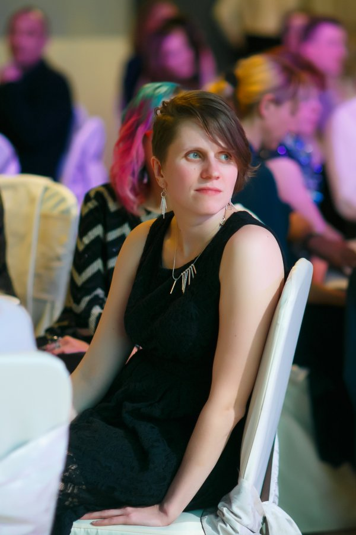

- Larisa Antokhina, 34 years, Saint-Petersburg
- Now I'm living in Minsk, Belarus +375445479399 laranto1985@gmail.com
- My background includes eight years of experience working as a biochemist specialist and five years as an Application and sales specialist in science market (cellbiology devices and software). But now I want my career move in a various direction. I like to learn new things, help other people understand new devices and softwares and make their lives easier. IT and programing is very interesting for me from my childhood, so now I feeling ready to move my career to this direction considering my acquired experience.
- I have no IT skills yet, but I have expirience in a science data analysis software, data bases, some kind of machine learning
- I have no code examples yet
- I have no IT expirience yet. Once I was a part of IT team with project "Electronic database of requests and complains"
- Saint – Petersburg State Chemical-Pharmaceutical academy (2002-2007), Frontend course (Skillbox) now in progress.
- Base English (writing, talking, understading science articles and software interfaces).